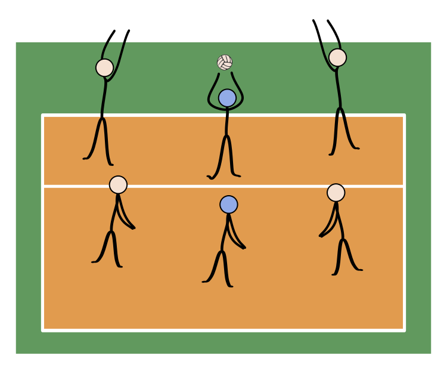
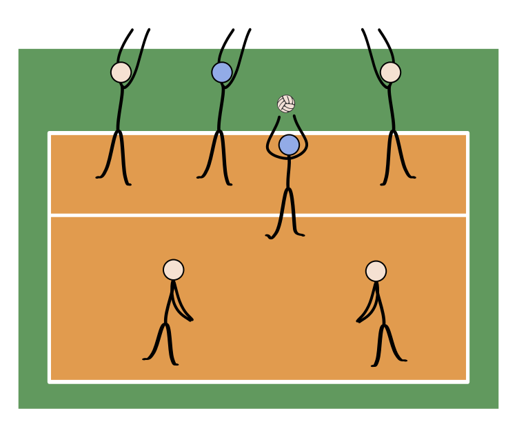
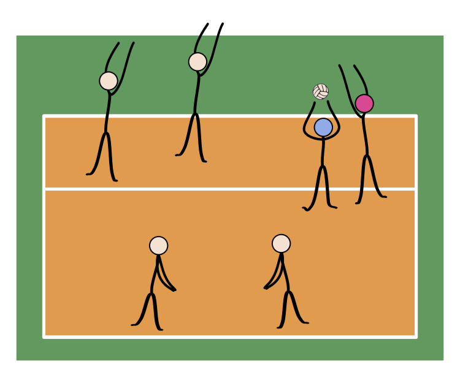

Strategy
- Team Play
- Player Specialization
- Formations
Team play
Volleyball is essentially a game of transition from one of the above skills to the next, with choreographed team movement between plays on the ball. These team movements are determined by the teams chosen serve receive system, offensive system, coverage system, and defensive system.
The serve-receive system is the formation used by the receiving team to attempt to pass the ball to the designated setter. Systems can consist of 5 receivers, 4 receivers, 3 receivers, and in some cases 2 receivers. The most popular formation at higher levels is a 3 receiver formation consisting of two left sides and a libero receiving every rotation. This allows middles and right sides to become more specialized at hitting and blocking.
Offensive systems are the formations used by the offence to attempt to ground the ball into the opposing court (or otherwise score points). Formations often include designated player positions with skill specialization (see Player specialization, below). Popular formations include the 4-2, 6-2, and 5-1 systems (see Formations, below). There are also several different attacking schemes teams can use to keep the opposing defence off balance.
Coverage systems are the formations used by the offence to protect their court in the case of a blocked attack. Executed by the 5 offensive players not directly attacking the ball, players move to assigned positions around the attacker to dig up any ball that deflects off the block back into their own court. Popular formations include the 2-3 system and the 1-2-2 system. In lieu of a system, some teams just use a random coverage with the players nearest the hitter.
Defensive systems are the formations used by the defence to protect against the ball being grounded into their court by the opposing team. The system will outline which players are responsible for which areas of the court depending on where the opposing team is attacking from. Popular systems include the 6-Up, 6-Back-Deep, and 6-Back-Slide defence. There are also several different blocking schemes teams can employ to disrupt the opposing teams' offence.
When one player is ready to serve, some teams will line up their other five players in a screen to obscure the view of the receiving team. This action is only illegal if the server makes use of the screen, so the call is made at the referee's discretion as to the impact the screen made on the receiving team's ability to pass the ball. The most common style of screening involves a W formation designed to take up as much horizontal space as possible.
Player Specialization
There are five positions filled on every volleyball team at the elite level. Setter, Outside Hitter/Left Side Hitter, Middle Hitter, Opposite Hitter/Right Side Hitter and Libero/Defensive Specialist. Each of these positions plays a specific, key role in winning a volleyball match.
- Setters have the task for orchestrating the offence of the team. They aim for the second touch and their main responsibility is to place the ball in the air where the attackers can place the ball into the opponents' court for a point. They have to be able to operate with the hitters, manage the tempo of their side of the court and choose the right attackers to set. Setters need to have a swift and skilful appraisal and tactical accuracy and must be quick at moving around the court. At elite level, setters used to usually be the shortest players of a team (before liberos were introduced), not being typically required to perform jump hits, but that would imply need for short-term replacemente by taller bench players when critical points required more effective blocks; in the 1990s taller setters (e.g. Fabio Vullo, Peter Blangé) became being deployed, in order to improve blocks.
- Liberos are defensive players who are responsible for receiving the attack or serve. They are usually the players on the court with the quickest reaction time and best passing skills. Libero means 'free' in Italian—they receive this name as they have the ability to substitute for any other player on the court during each play. They do not necessarily need to be tall, as they never play at the net, which allows shorter players with strong passing and defensive skills to excel in the position and play an important role in the team's success. A player designated as a libero for a match may not play other roles during that match. Liberos wear a different colour jersey than their teammates.
- Middle blockers or Middle hitters are players that can perform very fast attacks that usually take place near the setter. They are specialized in blocking since they must attempt to stop equally fast plays from their opponents and then quickly set up a double block at the sides of the court. In non-beginners play, every team will have two middle hitters. At elite levels, middle hitters are usually the tallest players, whose limited agility is countered by their height enabling more effective blocks.
- Outside hitters or Left side hitters attack from near the left antenna. The outside hitter is usually the most consistent hitter on the team and gets the most sets. Inaccurate first passes usually result in a set to the outside hitter rather than middle or opposite. Since most sets to the outside are high, the outside hitter may take a longer approach, always starting from outside the court sideline. In non-beginners play, there are again two outside hitters on every team in every match. At elite level, outside hitters are slightly shorter than middle hitters and outside hitters, but have the best defensive skills, therefore always re-placing to the middle while in the back row.
- Opposite hitters or Right-side hitters carry the defensive workload for a volleyball team in the front row. Their primary responsibilities are to put up a well-formed block against the opponents' Outside Hitters and serve as a backup setter. Sets to the opposite usually go to the right side of the antennae. Therefore, they are usually the most technical hitters since balls lifted to the right side are quicker and more difficult to handle (the setters having to place the ball while slightly off-set to the right, and with their back to the attacker), and also having to jump from the back row when the setter is on the front row. At elite level, until the 1990s several opposite hitters used to be able to also play as middle hitters (e.g. Andrea Zorzi, Andrea Giani), before high specialization curtained this flexibility in the role.
At some levels where substitutions are unlimited, teams will make use of a Defensive Specialist in place of or in addition to a Libero. This position does not have unique rules like the libero position, instead, these players are used to substitute out a poor back row defender using regular substitution rules. A defensive specialist is often used if you have a particularly poor back court defender in right side or left side, but your team is already using a libero to take out your middles. Most often, the situation involves a team using a right side player with a big block who must be subbed out in the back row because they aren't able to effectively play backcourt defence. Similarly, teams might use a Serving Specialist to sub out a poor server.
Formations
The three standard volleyball formations are known as "4-2", "6-2" and "5-1", which refers to the number of hitters and setters respectively. 4-2 is a basic formation used only in beginners' play, while 5-1 is by far the most common formation in high-level play.
4-2
The 4-2 formation has four hitters and two setters. The setters usually set from the middle front or right front position. The team will, therefore, have two front-row attackers at all times. In the international 4-2, the setters set from the right front position. The international 4-2 translates more easily into other forms of offence.
The setters line up opposite each other in the rotation. The typical lineup has two outside hitters. By aligning like positions opposite themselves in the rotation, there will always be one of each position in the front and back rows. After service, the players in the front row move into their assigned positions, so that the setter is always in the middle front. Alternatively, the setter moves into the right front and has both a middle and an outside attacker; the disadvantage here lies in the lack of an offside hitter, allowing one of the other team's blockers to "cheat in" on a middle block.
The clear disadvantage to this offensive formation is that there are only two attackers, leaving a team with fewer offensive weapons.
Another aspect is to see the setter as an attacking force, albeit a weakened force, because when the setter is in the frontcourt they are able to 'tip' or 'dump', so when the ball is close to the net on the second touch, the setter may opt to hit the ball over with one hand. This means that the blocker who would otherwise not have to block the setter is engaged and may allow one of the hitters to have an easier attack.
6-2
In the 6-2 formation, a player always comes forward from the back row to set. The three front row players are all in attacking positions. Thus, all six players act as hitters at one time or another, while two can act as setters. So the 6-2 formation is actually a 4-2 system, but the back-row setter penetrates to set.
The 6-2 lineup thus requires two setters, who line up opposite to each other in the rotation. In addition to the setters, a typical lineup will have two middle hitters and two outside hitters. By aligning like positions opposite themselves in the rotation, there will always be one of each position in the front and back rows. After service, the players in the front row move into their assigned positions.
The advantage of the 6-2 is that there are always three front-row hitters available, maximizing the offensive possibilities. However, not only does the 6-2 require a team to possess two people capable of performing the highly specialized role of setter, it also requires both of those players to be effective offensive hitters when not in the setter position. At the international level, only the Cuban National Women's Team employs this kind of formation. It is also used by NCAA teams in Division III men's play and women's play in all divisions, partially due to the variant rules used which allow more substitutions per set than the 6 allowed in the standard rules—12 in matches involving two Division III men's teams and 15 for all women's play.
5-1
The 5-1 formation has only one player who assumes setting responsibilities regardless of their position in the rotation. The team will, therefore, have three front-row attackers when the setter is in the back row and only two when the setter is in the front row, for a total of five possible attackers.
The player opposite the setter in a 5-1 rotation is called the opposite hitter. In general, opposite hitters do not pass; they stand behind their teammates when the opponent is serving. The opposite hitter may be used as a third attack option (back-row attack) when the setter is in the front row: this is the normal option used to increase the attack capabilities of modern volleyball teams. Normally the opposite hitter is the most technically skilled hitter of the team. Back-row attacks generally come from the back-right position, known as zone 1, but are increasingly performed from back-centre in high-level play.
The big advantage of this system is that the setter always has 3 hitters to vary sets with. If the setter does this well, the opponent's middle blocker may not have enough time to block with the outside blocker, increasing the chance for the attacking team to make a point.
There is another advantage, the same as that of a 4-2 formation: when the setter is a front-row player, he or she is allowed to jump and "dump" the ball onto the opponent's side. This too can confuse the opponent's blocking players: the setter can jump and dump or can set to one of the hitters. A good setter knows this and thus won't only jump to dump or to set for a quick hit, but when setting outside as well to confuse the opponent.
The 5-1 offence is actually a mix of 6-2 and 4-2: when the setter is in the front row, the offense looks like a 4-2; when the setter is in the back row, the offense looks like a 6-2.